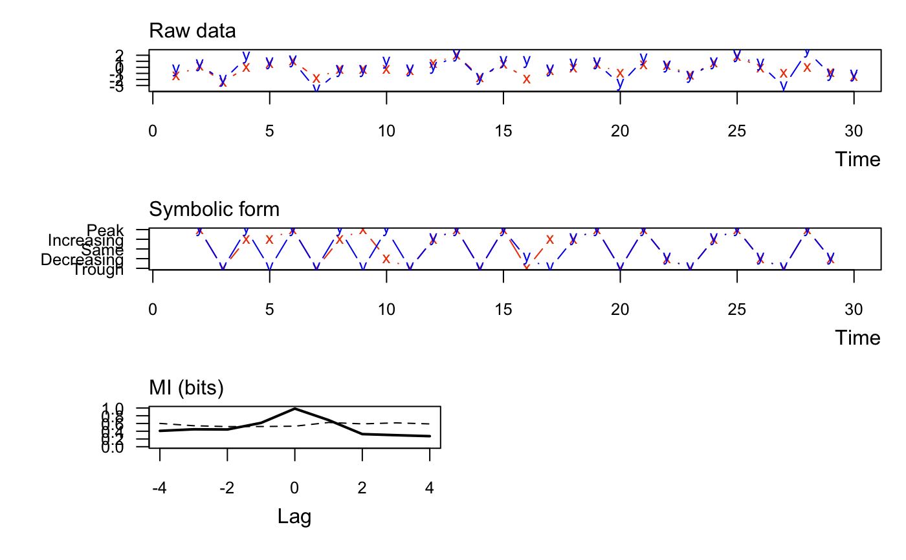

muti calculates the mutual information between two vectors at multiple
lags and plots the results.
muti(x, y, sym = TRUE, n_bins = NULL, normal = FALSE, lags = seq(-4, 4), mc = 100, alpha = 0.05)
| x | First vector of data. Must be |
|---|---|
| y | Second vector of data. Must be |
| sym | Logical indicator of whether to use symbolic representation of the
data when calculating the MI. If |
| n_bins | The number of bins to use for discretizing the data when
|
| normal | Logical indicator of whether to normalize the mutual information to [0,1]. |
| lags | One or more integers indicating at what lags to calculate the MI.
Note that a negative (positive) lag means |
| mc | The number of Monte Carlo simulations for estimating the critical threshold value on the mutual information, above which the MI is significant at the specified `alpha`. Must be a non-negative integer. |
| alpha | The alpha value for estimating the upper (1-alpha)% critical threshold on the mutual information. |
A data.frame with columns for lag (lag), mutual
information between x & y (MI_xy), and the threshold value
(MI_tv) above which the MI is signficant at the specified
alpha. Note that the lower bound for MI is 0. Also returns plots of
x & y (top panel), their discrete values (middle panel), and the mutual
information at specified lags (bottom panel).
#> lag MI_xy MI_tv #> 1 -4 0.409 0.602 #> 2 -3 0.450 0.542 #> 3 -2 0.445 0.520 #> 4 -1 0.615 0.522 #> 5 0 0.984 0.530 #> 6 1 0.688 0.626 #> 7 2 0.326 0.590 #> 8 3 0.298 0.616 #> 9 4 0.272 0.589